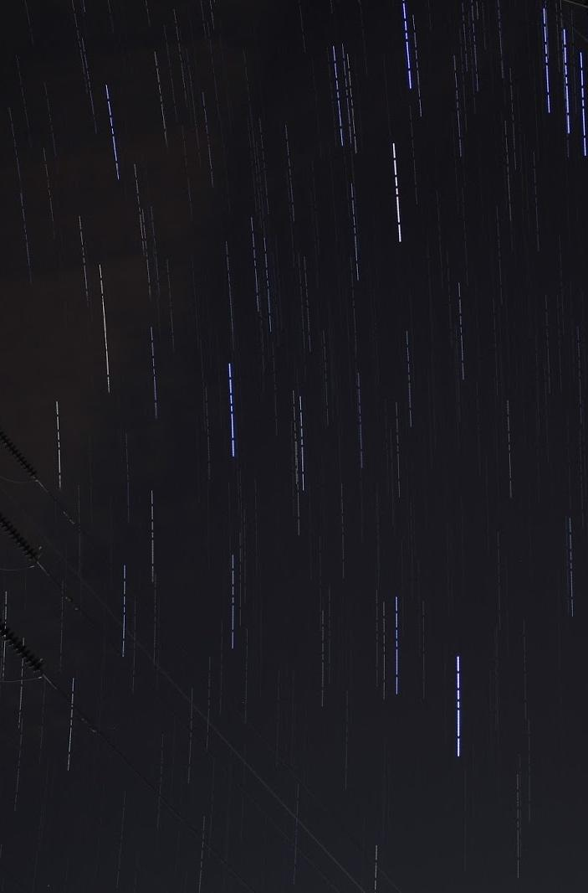

Ever since I got my new Canon 700D, I've been looking more into photography as an art than ever before. Thanks to internet photography guides, less light pollution in uni campus than urban Bangalore, and some more proficiency with editing software, I've been able to produce more interesting photos than before. Another thing which I've changed is my stance on editing. Until recently, I was of the opinion that my photos should be as virgin as possible, with editing restricted to nothing more than cropping or watermarking. Now, I subscribe to the more accepting (but still conservative) school of thought: that editing should be used to bring out the best of an image while keeping its basic elements intact.
However, contradictory to the above, one photography art form I've really enjoyed doing is photography using composite pictures. In composite photography, the photographer takes several frames of a scene and then combines all the frames together using special software. I guess my favorite part about it is the surprise element of the final image - I have no idea what the output is going to be till I've post-processed the images on my laptop computer. It's been very early days for me when it comes to composite photography, but here are a few photos I've felt are worth sharing:


Star trails! I've always wanted to try my hand at astrophotography, but never could due to Bangalore light pollution and due to not having a camera with good noise reduction.
These two images take advantage of the comparatively lower light pollution in the campus. These photos are a stacked result of multiple exposures - the first one combines fifty frames and the second one combines nearly a hundred. Each frame uses identical settings for the best stacking results.
We shot these from midnight till 2am using laptops for camera tethering and intervalometer settings. I can't stress on how important having a tripod is for this - the slightest shift between frames would've given us terrible discontinuity in the final image. The final images were composited using StarStaX.

360 degree panorama image of BITS Pilani, Hyderabad Campus! Taken from the middle of the football field, it is a panorama of 33 images stitched using hugin for Linux. I set up the camera in a portrait orientation with the tripod and tried to make a composite by overlapping 30-40% of each image. Post processing felt like it took forever due to the gigantic images and the final image was a whopping 70.2MP (30000x2404) and is 130 MB large. Although a couple of frames were shot using the wrong exposure settings, hugin managed to do a really good job in keeping the differences minimal though there still are a couple of splotches due to my ineptitude. The uncompressed, full size version is here: https://goo.gl/iY5v14

This little planet picture uses the same panorama as the previous image. It's a much simpler to post process this with a panorama than it appears. It was created by resizing the image to a square following a polar coordinate filter transformation in GIMP to roll the image and to line up the ends. If I had to do this image again, I would redo it at night with long exposures to give it a more spacey flavor.
As closing remarks, I'm overall pretty satisfied with how easy it is to make simple composite pictures using software. I will probably get back into making more of this again, but probably after I work on another project ;)